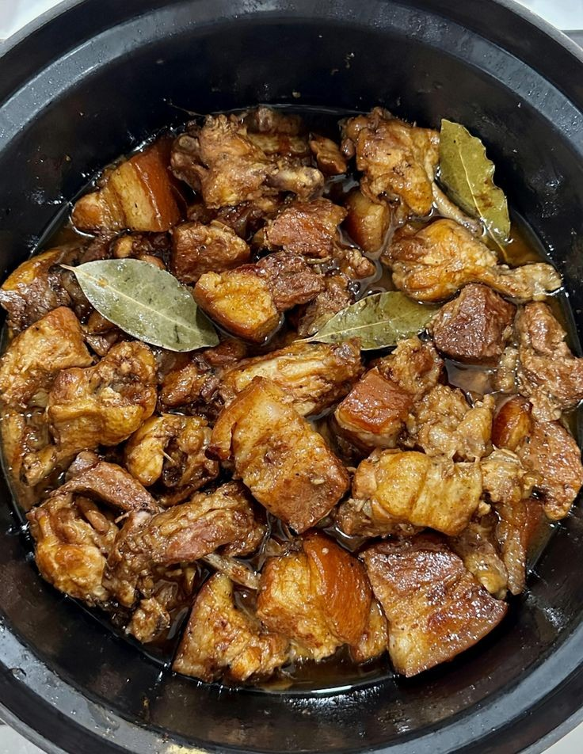

Delicious Pork Adobo Recipe

Ingredients
- 2 lbs pork belly, cut into cubes
- 1/2 cup soy sauce
- 1/4 cup vinegar
- 1 onion, sliced
- 6 cloves garlic, minced
- 1 teaspoon black peppercorns
- 2 bay leaves
- 1 tablespoon vegetable oil
- 1 cup water
- Salt to taste
Instructions
- Marinate the pork belly in soy sauce, vinegar, garlic, and black peppercorns for at least 30 minutes.
- Heat vegetable oil in a pot over medium heat. Add the marinated pork and cook until lightly browned.
- Add the sliced onion, bay leaves, and water. Bring to a boil, then reduce the heat to a simmer.
- Cover and cook for 40-50 minutes, stirring occasionally, until the pork is tender and the sauce has reduced.
- Season with salt to taste. Serve hot with steamed rice.